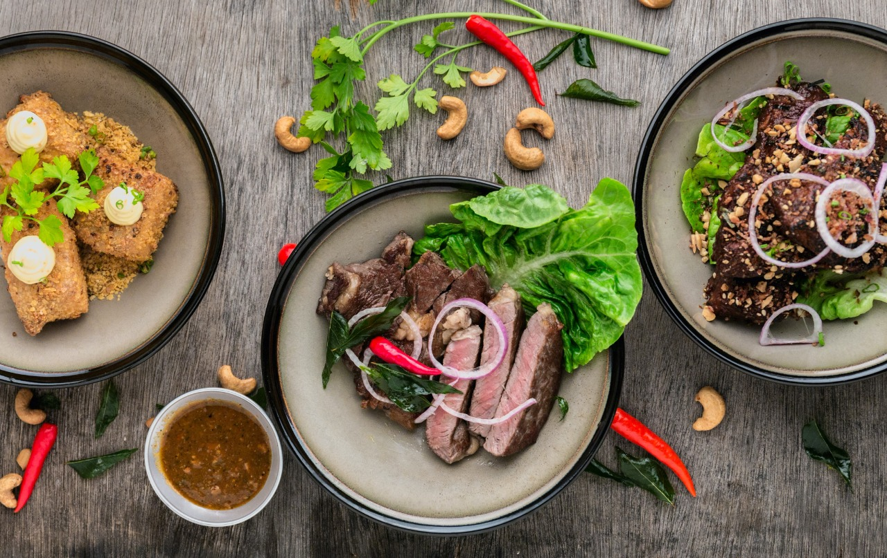
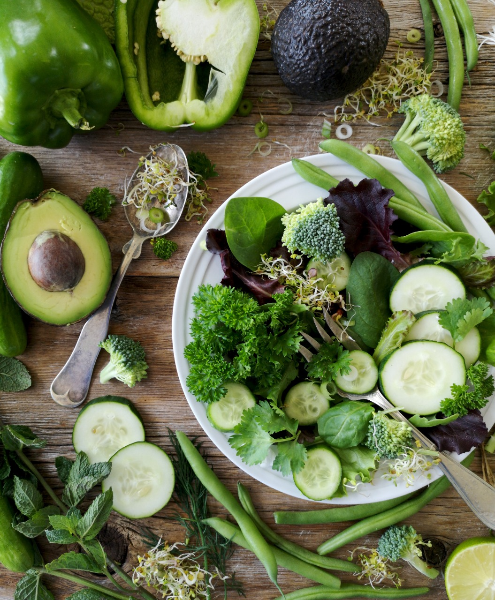

Monthly Meals
مع اشتراك الوجبات الشهرية سوف يتم تحديد احتياجك من السعرات مع اخصائية التغذية , واضافة الى ذلك جلسات لتحديد الوجبات وماتحتوي عليها لمدة شهر
ويتميّز الاشتراك الشهري بمتابعة اسبوعيه مع اخصائية التغذية
Weekly Meals
مع اشتراك الوجبات الشهرية سوف يتم تحديد احتياجك من السعرات مع اخصائية التغذية , واضافة الى ذلك جلسات لتحديد الوجبات وماتحتوي عليها لمدة اسبوع